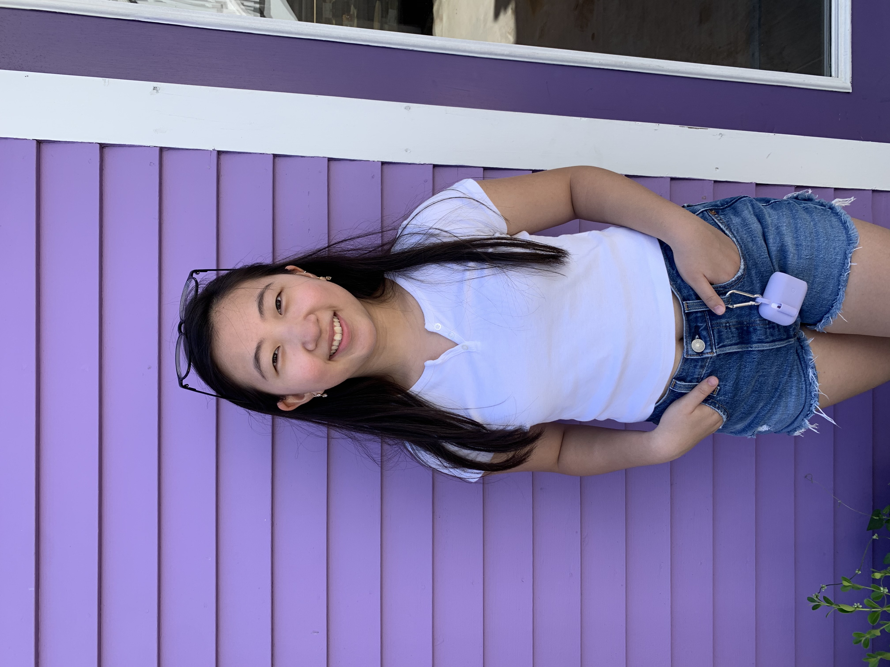

Lucia is a sophomore in high school and a first-year mentee who loves to write about her family and friends. She lived in Queens all her life, moving houses in the same block a total of three times. Throughout her life, Lucia used drawing as a way of relaxation and comfort. Her grandfather heavily inspired her cartoon-like art, and she used this style when drawing for Visualistic. Lucia is a Korean American who “studies” the language by watching romantic K-dramas. When she’s not wrapped in a blanket burrito in front of the t.v, Lucia loves to read self-help books and enjoys putting makeup on her mom and sister.
Sandra is a sixteen-year-old high school student from Queens, New York. She is a first-year Girls Write Now 360 mentee with an interest in art, design, and activism. Following her passions in design and media, Sandra also serves as a co-pod chair for the Website Editorial Pod. Her role in this pod project includes designing the layout of the site and drawing pictures for the site’s design function. You can find her scrolling through Tik Tok or learning a new skill, for example coding a new language or juggling!
Victoria is a senior in high school and a third-year mentee from Queens, NY. She enjoys exploring different writing and multimedia genres such as science fiction and erasure poetry. This year, she served as co-chair of the Website Editorial pod. Her role in this pod project is designing the layout of the promo pic editor and coding the website. In her free time, you can find her making art in different mediums and learning new skills through books and videos.